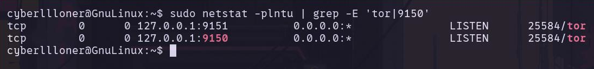
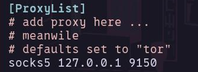

درود به همگی، امیدوارم حال دلتون خوب باشه. ^^ این اولین پست وبلاگمه. در کل قراره توی این وبلاگ درمورد همه چیز بنویسم که البته تمرکزم روی محتوای متنی آموزشی مرتبط با موضوعات فنی هست. هدفم اینه چیزایی که بلدم رو با شما به اشتراک بگذارم، همونطور که دیگران دانشی که داشتن رو آزادانه به اشتراک گذاشتن و ما استفاده کردیم! بنظرم این یکی از باحال ترین چرخههای موجوده :)
قبل شروع این مورد رو اضافه کنم موارد فنی که راجبشون توی وبلاگم مینویسم بیشتر مرتبط با نرمافزارهای آزاد و سیستمعامل گنو/لینوکس هست. خودمم گنو/لینوکسیام و روی همین سیستمعامل چیزایی که بلدم رو با شما به اشتراگ میگذارم. امیدوارم لذتش رو ببرید.
خب بریم سراغ بحث اصلی. تا حالا شده نیاز داشته باشید ترافیک نرمافزارهایی که از طریق کامند لاین اجرا میکنید رو به سمت Tor بفرستید؟ اگر آره یعنی ممکنه در این مورد مطالعه کرده باشید و بدونید با TorDaemon سروکار خواهید داشت. و البته torsocks، usewithtor و یا torify.
یک نکته رو هم بگم. من از این مواردی که نام بردم استفاده نمیکنم و شناخت عمیقی هم از اینها ندارم. همچنین ممکنه ابزارهای دیگهای وجود داشته باشند که از هر نظر برای این مورد بهتر باشن. بالاخره هر کدوم از اینها خوبیها و بدیهای خودشون رو ممکنه داشته باشن. حتی این روشی که قراره درموردش توضیح بدم از یک سری جهات میتونه بهترین نباشه و یا حتی بدترین باشه! اما اگر دنبال یک راه خیلی ساده و سریع برای انجام این کار هستید، این روش میتونه خیلی خوب باشه. بخصوص اگه مبتدی باشید چون که موارد بالا نیازمند کانفیگ بصورت دستی هست. توی این مسیر هم احتمال اینکه به باگ های مختلفی بخورید صفر نیست.
خب برای شروع به مرورگر Tor و ابزار proxychains یا proxychains4 نیاز دارید. برای دانلود مرورگر Tor یه سر به این صفحه بزنید و نسخه گنو/لینوکس رو دانلود کنید. همچنین مراحلی که بعد از دانلود باید طی کنید در اینجا توضیح داده شده. جهت اطلاع برای کسایی که شاید ندونن باید بگم سایت Tor فیلتره! یادتون نره قند شکن خودتون رو از قبل روشن کنید :)
ابزار proxychains یا proxychains4 با پکیج منیجر apt به راحتی قابل نصبه. البته شک ندارم که از طریق پکیج منیجرهای دیگه هم قابل نصبه. برای مثال اگر از آرچ استفاده میکنید، این ابزار روی مخازن aur و pacman موجوده. برای این پست از proxychains4 استفاده میکنم. برای نصب فقط کافیه دستور زیر رو در ترمینال اجرا کنید. البته قبل از نصب لیست پکیجهای مخزن رو بروزرسانی میکنیم.
sudo apt update && sudo apt install proxychains4 -y
حالا که ابزارهای مورد نیاز رو نصب کردید بگذارید خیلی ساده توضیح بدم که قراره چیکار کنیم. در واقع قراره ترافیک ابزارهایی که از طریق کامند لاین اجرا میکنیم رو بفرستیم به سمت Tor که ابزار proxychains4 این کار رو برامون انجام میده. اونم به طرز خیلی بامزه و ساده!
در مرحله اول باید مرورگر Tor رو اجرا کنید. بعد از اجرا به طور خودکار سعی میکنه که به شبکه Tor وصل بشه. نمیخوام زیاد روی این موضوع عمیق بشم ولی جاهایی که Tor بلاک هست باید از bridge برای وصل شدن به شبکه Tor استفاده کنیم. مرورگر Tor سه مدل bridge از نوع built-in داره. دو مدل اول بیشتر مورد استفاده قرار میگیرن یعنی obsf4 و snowflake که از طریق منوی settings و بخش Connection قابل انتخابن. اگر توی این مسیر به مشکل خوردید مستندات رسمی و یا راه های موجود در فرومها رو مطالعه کنید. (دست به سرچ خوبی داشته باشید!)
بعد از اینکه مرورگر Tor رو اجرا کردید و با موفقیت به شبکه Tor وصل شدید وقتشه که بفهمیم روی کدوم پورت اجرا شده. خود سرویس Tor به تنهایی بطور پیشفرض روی پورت 9050 و اون سرویس Tor که به واسطه مروگر Tor اجرا میشه روی پورت 9150 قرار داره اما بهتره که بررسی کنیم و ببینیم در واقع روی کدوم پورت هست. با دستور زیر میتونید به راحتی لیستی از نرمافزارهایی که دارن از پورت بخصوصی استفاده میکنند رو ببینید.
sudo netstat -plntu
اگر ابزار netstat رو ندارید باید net-tools رو نصب کنید. net-tools شامل ابزارهای کامند لاینی معروف و کاربردی مرتبط با شبکه هست. از جمله ifconfig و یا route و غیره.
با دستور زیر میتونید net-tools رو نصب کنید.
sudo apt install net-tools
دقت کنید توی لیستی که دستور netstat بالا بهتون میده هم TorBrowser هست و هم Tor. ما کاری به پورت TorBrowser نداریم و باید به پورت tor توجه کنیم. با دستور زیر میتونیم به چیزی که دنبالش هستیم برسیم.
sudo netstat -plntu | grep -E 'tor|9150'

خب حالا که فهمیدیم سرویس Tor در واقع روی آدرس loopback یا همون 127.0.0.1 و پورت 9150 قرار داره وقتشه که بعنوان یک پروکسی به فایل کانفیگ proxychains4 اضافش کنیم. توی این مرحله با هر ادیتوری که دوست دارید فایل proxychains4.conf رو باز کنید.
sudo nano /etc/proxychains4.conf
ببینید رفتار ابزار proxychains4 با لیست پروکسی که بهش میدید قابل تنظیمه. چندین حالت داره که توضیحات هر کدوم بصورت کامنت موجود هستند که میتونید اونها رو مطالعه کنید. مورد اول که باید انجام بدیم uncomment کردن dynamic_chain و quiet_mode هست. مورد دوم اینه که آدرس سرویس Tor رو بعنوان یک پروکسی از نوع socks به انتهای فایل اضافه کنید. من ترجیح میدم از socks5 استفاده کنم. طبق عکس زیر پروکسی رو به انتهای فایل اضافه کنید.

خب همه مواردی که نیاز بود رو انجام دادیم. وقتشه که یه تست کوچیک انجام بدیم. بطور کل روش کار با ابزار proxychains4 اینطوره که باید قبل از نوشتن یه کامند از کامند proxychains استفاده کنید. برای مثال میخوایم آدرس IP نوع Public خودمون رو با ابزار curl و سایت جالب icanhazip.com پیدا کنیم. خب در حالت عادی برای اینکار باید از کامند زیر استفاده کرد.
curl icanhazip.com
در حالتی که بخوایم از proxychains4 استفاده کنیم باید از این کامند استفاده کنیم. این کامند همون کاری رو میکنه که کامند قبلی کرد ولی با یک تفاوت جالب! خود curl بعنوان یک agent عمل میکنه. درخواست ما به کمک proxychains4 فوروارد میشه به سرویس Tor، یعنی پورت 9150 در آدرس loopback ما. در اینجا خود Tor شامل node ورودی و خروجی بعلاوه node های میانی میشه. آدرس node خروجی ما همون آدرسیه که مقصد نهایی از ما بدست میاره. در این موقعیت سایت icanhazip.com فقط آدرس node خروجی رو میبینه و نمایش میده، نه آدرس اصلی ما رو.
proxychains curl icanhazip.com
تبریک میگم! به همین راحتی موفق شدید که توی کامند لاین ترافیک ابزارها رو بفرستید سمت Tor اونم با یک راه ساده، سریع و مقداری خلاقانه! امیدوارم محتوای این پست براتون مفید بوده باشه، نهایت لذت رو برده باشید و توی کارتون از چیزی که الان یاد گرفتید نهایت استفاده رو ببرید. ^^
راستی اگر دوست داشتید میتونید منو به یه قهوه دعوت کنید :)
این بهم کمک میکنه که با انرژی و قدرت بیشتری ادامه بدم…